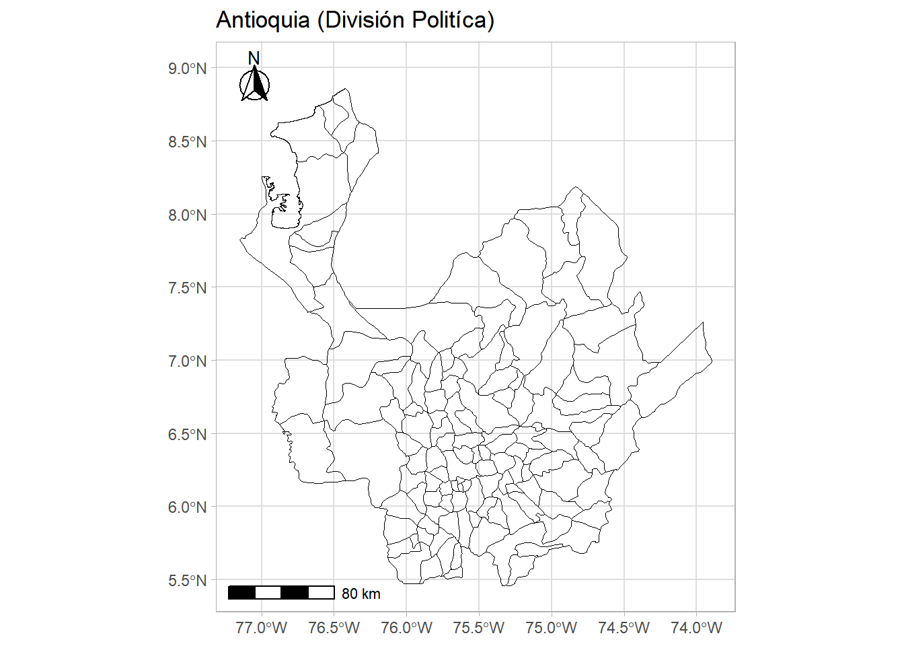
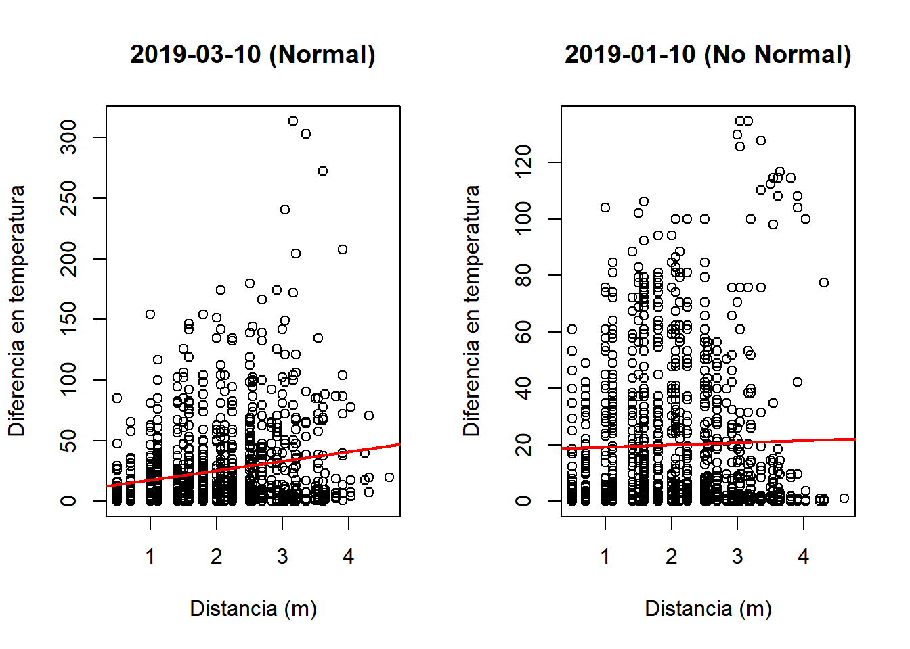
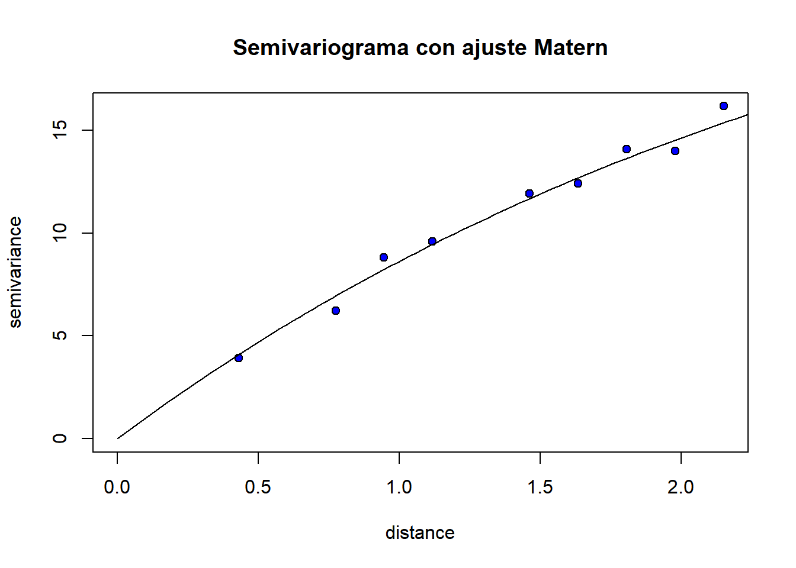

Descarga de datos contorno de Colombia (Shapefile)
Cada país posee un código de tres letras en la base de datos de Rstudio, en nuestro caso usaremos COL para llamar a Colombia, y al nombre del vector se le asignará el mismo nombre.
Para el primer gráfico se ejecutará el siguiente código, siendo el level=0 el llamado al país en su totalidad, sin ningún tipo de división política.
En nuestro caso de estudió se hará con la región de Antioquia
Para lograr esto se debe delimitar a los municipios de estudio
Código
# Municipios de Estudio dentro de la región:Antioquia <-gadm_subset(municipios, level=1,regions=("Antioquia"))gadm_plot(Antioquia, title ="Antioquia (División Politíca)") %>%gadm_showNorth("tl") %>%gadm_showScale('bl')

Ahora, para el ejercicio de interés, se centra con la información de un departamento especifico.
Bueno, la base de datos general de Colombia está dividida por el numero de departamentos y municipios, por lo cual se crea un subset que contenga el departamento de estudio y sus municipios respectivos.
Luego, se hacen dos cosas. Primero, se gráfica los bordes del departamento y segundo, se guarda en un dataframe la información de las columnas 1 y 2. Estas columnas son el sistema de coordenadas.
La pagina suministra 2 archivos con 2 bases de datos diferentes. Una con datos de la precipitación y otro de la temperatura.
Ahora, con ambas bases de datos se pueden realizar preguntas de diversos tipos.
Código
dt0 <-read_csv("temperature.csv")head(dt0)
Se escoje una fecha para trabajar
Debido a que no se trabajará con problemas espacio-temporales se seleccionó de manera arbitraria una fecha. Para este ejercicio se toman los datos de la manera ya mencionada para el 2019-01-10
Shapiro-Wilk normality test
data: df$`Temp max`
W = 0.97894, p-value = 0.4563
Al realizar la misma prueba de hipótesis sobre la variable de temperatura máxima pero de otra fecha se tienen datos normales.
Lo que se desea enfatizar es que, a pesar de que el resultado de la primer muestra seleccionada ha rechazado el supuesto de normalidad de los datos, un fenómeno natural como la temperatura cabría esperar, por la naturaleza de su proceso, que siguiese un proceso normal. Dicha información puede ser constatada en otros artículos pero esta no es la preocupación principal del presente.
Es por esto que, para este caso,se asume que a pesar de la no normalidad presentada por el test de Shapiro-Wilk, se procede con los análisis estadísticos-espaciales.
A partir de este momento, se realizan análisis para dos fechas, dado que se busca demostrar las técnicas vistas en clase, se plantea entonces analizar los datos propuestos inicialmente y los datos para la fecha que si cumple los supuestos, esto con la intención de ver como la desviación de la normalidad podría afectar los resultados.
datosmatriz1 <-data.frame(dif.prof=dif.temp1[lower.tri(dif.temp1)],distancia1=distancia1[lower.tri(distancia1)])datosmatriz2 <-data.frame(dif.prof=dif.temp2[lower.tri(dif.temp2)],distancia2=distancia2[lower.tri(distancia2)])par(mfrow =c(1,2))# (2019-03-10) [Normal]plot(x = datosmatriz1$distancia1, y = datosmatriz1$dif.prof,main ="2019-03-10 (Normal)", ylab ="Diferencia en temperatura",xlab ="Distancia (m)")abline(lm(dif.prof~distancia1, data = datosmatriz1), lwd =2,col ="red")# (2019-01-10) [NO Normal]plot(x = datosmatriz2$distancia2, y = datosmatriz2$dif.prof,main ="2019-01-10 (No Normal)", ylab ="Diferencia en temperatura",xlab ="Distancia (m)")abline(lm(dif.prof~distancia2, data = datosmatriz2), lwd =2,col ="red")

Aunque no es muy marcado, se observa que, a distancias más pequeñas, la disimilitud es más pequeña. Se podría pensar existe una autocorrelación espacial para el gráfico de la izquierda en contra parte con el gráfico de la derecha que muestra una tendencia constante sugiriendo la no correlación espacial.
Mantel statistic based on Pearson's product-moment correlation
Call:
mantel(xdis = distancia1, ydis = dif.temp1, na.rm = T)
Mantel statistic r: 0.2136
Significance: 0.001
Upper quantiles of permutations (null model):
90% 95% 97.5% 99%
0.0661 0.0824 0.0962 0.1232
Permutation: free
Number of permutations: 999
Según este método a una significancia de 0.05 se rechaza la hipótesis nula acerca de aleatoriedad espacial. Entonces se concluye hay autocorrelación espacial.
Código
mantel.rtest(distancia1, dif.temp1, nrepet=999)
Monte-Carlo test
Call: mantelnoneuclid(m1 = m1, m2 = m2, nrepet = nrepet)
Observation: 0.2136163
Based on 999 replicates
Simulated p-value: 0.001
Alternative hypothesis: greater
Std.Obs Expectation Variance
4.0979112054 -0.0000596647 0.0027188571
Con el test de Mantel se prueba que existe autocorrelación espacial; es decir, la temperatura es similar entre unidades geográficas próximas.
2019-01-10 (NO-Normal)
Código
mantel(distancia2, dif.temp2)
Mantel statistic based on Pearson's product-moment correlation
Call:
mantel(xdis = distancia2, ydis = dif.temp2)
Mantel statistic r: 0.06555
Significance: 0.106
Upper quantiles of permutations (null model):
90% 95% 97.5% 99%
0.0666 0.0885 0.1065 0.1328
Permutation: free
Number of permutations: 999
Código
mantel.rtest(distancia2, dif.temp2)
Monte-Carlo test
Call: mantelnoneuclid(m1 = m1, m2 = m2, nrepet = nrepet)
Observation: 0.06554854
Based on 99 replicates
Simulated p-value: 0.12
Alternative hypothesis: greater
Std.Obs Expectation Variance
1.220504060 0.003732104 0.002565248
Lamentablemente, en las dos fechas no se cumple el test de mantel, por lo cual se dice que para el día 2019-01-10 existe evidencia para no autocorrelación espacial.
La hipótesis de autocorrelación espacial se vio afectada por la desviación ligera de normalidad, entonces se procede a trabajar con los datos del 2019-03-10 y se analizará la temperatura máxima (si es posible también la mínima) en antioquia para la fecha seleccionada.
Ahora se procede a extraer empíricamente la distancia máxima para los semivariogramas.
Ambos semivariogramas refuerzan la hipótesis inicial respecto a la correlación espacial, lo anterior es fácil de observar en el gráfico de la derecha pues para distancias pequeñas la semivarianza tiene valores más pequeños que para distancias intermedias y grandes, se observa un comportamiento en alguna medida “creciente” respecto a las distancias.
Se puede notar a simple vista que los semivariogramas no siguen una estructura de los modelos teóricos vistos. La idea será finalmente, tratar de ajustar uno con una medida aceptable para realizar predicciones.
Este semivariograma apunta que no existe una fuerte autocorrelación espacial puesto que la mayoría de puntos del semivariograma están dentro de las bandas de confianza, aun así, la prueba formal ya comprobó que si existe dicha correlación.
variofit: covariance model used is matern
variofit: weights used: npairs
variofit: minimisation function used: optim
Código
plot(bin2, pch=21, bg="blue", lwd="black",main="Semivariograma con ajuste Matern")lines(fit_matern)

En este caso, el vector ini.vals1 contiene dos valores iniciales para el modelo de covarianza de Matern.
El primer valor (\(17.79\)) se utiliza para el parámetro de rango, que determina la distancia a la cual la correlación entre los puntos de datos cae a 0.5.
El segundo valor (\(0.7\)) se utiliza para el parámetro de suavidad, que controla la tasa a la que disminuye la correlación a medida que aumenta la distancia entre los puntos de datos.